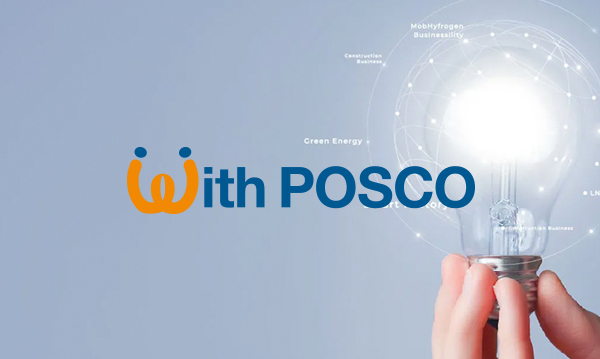

포스코엠텍 소개
시민과 미래를 향해 열려있는 포스코엠텍
철강포장 및 소재 전문기업으로서 철강사업에 새로운 가치를 제공하고 시너지를 창출하고자 합니다.-
경영이념
포스코는 '더불어 함께 발전하는 기업시민'을 추구합니다. 포스코 스스로가 사회 구성원의 일원이 되어 임직원, 주주, 고객, 공급사, 협력사, 지역사회 등 여러 이해관계자와 더불어 함께 발전하고, 배려와 공존, 공생의 가치를 함께 추구해 나가고자 합니다.
-

경영비전
더불어 함께 발전하는 기업시민 의미를 담고 있는 With의 의미를 시각적으로 전달하기 위해 W는 두 사람이 손을 맞잡고 있는 모습을 이미지화해 공감적 어울림이 꾸준히 지속됨을 표현하였습니다. 따뜻한 오렌지색은 함께 발전하는 긍정 에너지를 담았습니다.
-
활동영역
비즈니스 파트너와 함께 Win-Win 할 수 있는 공생가치를 창출하여 강건한 산업생태계를 조성하고, 사회공동체의 일원으로 경제적 이윤 창출을 넘어 사회문제 해결에 적극적으로 동참하며, 신뢰와 창의의 조직문화로 임직원이 보람과 행복을 느끼는 회사를 만들어갑니다.
-
핵심가치
포스코의 핵심가치는 '안전', '상생', '윤리', '창의'입니다. '안전'은 인간존중을 우선으로 직책보임자부터 솔선수범하여 실천우선의 안전행동을 체질화하는 것입니다. '상생'은 배려와 나눔을 실천하고 공생발전을 추구하며, 사회적 가치창출을 통하여 함께 지속성장하는 것입니다. '윤리'는 사회 구성원 간 상호신뢰를 기반하여 정도를 추구하고 신상필벌의 원칙을 지키는 것입니다. '창의'는 열린사고로 개방적인 협력을 통하여 문제를 주도적으로 해결하는 것입니다.
- 안전
- 상생
- 윤리
- 창의